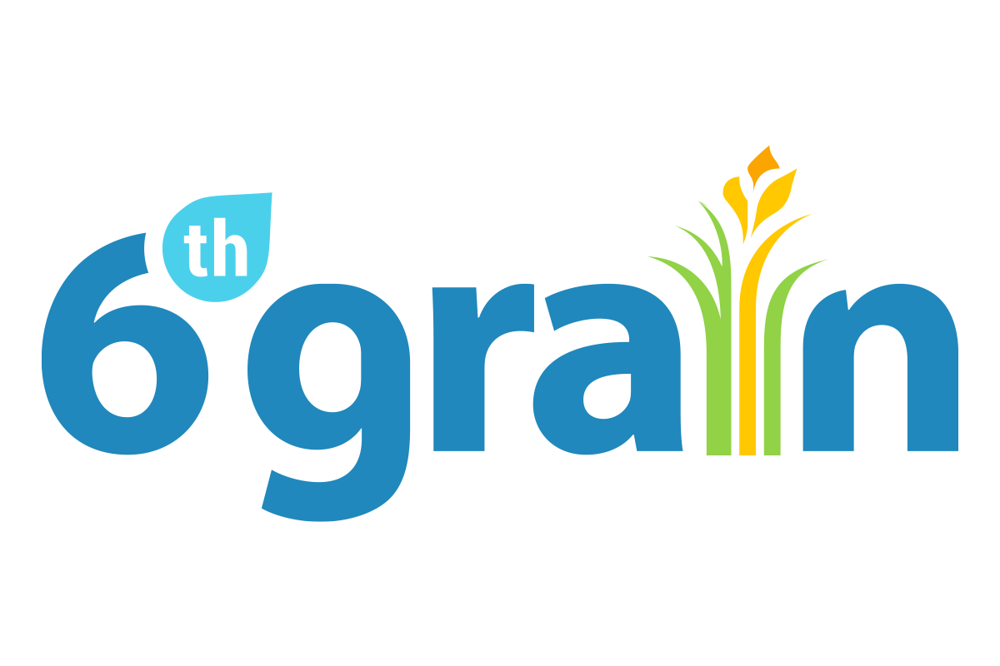

They utilize local data to vitalize the agricultural system with the objective of deriving data insights, driving evidence-based decisions, and improving productivity for actors along the agriculture value chain..
6Grain is an agricultural data company seeking to expand their gathering of boundary data. The problem we are trying to solve is on gathering agricultural boundary data, alongside information within that boundary. However they have a lack of data gathered on websites and other online entities, therefore they tasked us to seek out this data.
Alongside various manual information gathering along the way, we are seeking to use various web scraping techniques to create a tool that can easily search for boundary data for agricultural fields.